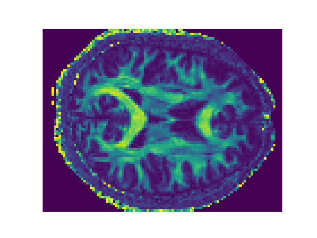

Note
Click here to download the full example code
AFQ API¶
An example using the AFQ API
Out:
Dataset is already in place. If you want to fetch it again please first remove the folder /Users/arokem/.dipy/stanford_hardi
Dataset is already in place. If you want to fetch it again please first remove the folder /Users/arokem/.dipy/stanford_hardi
Dataset is already in place. If you want to fetch it again please first remove the folder /Users/arokem/.dipy/stanford_hardi
Dataset is already in place. If you want to fetch it again please first remove the folder /Users/arokem/.dipy/stanford_hardi
Dataset is already in place. If you want to fetch it again please first remove the folder /Users/arokem/.dipy/stanford_hardi
Dataset is already in place. If you want to fetch it again please first remove the folder /Users/arokem/.dipy/stanford_hardi
Dataset is already in place. If you want to fetch it again please first remove the folder /Users/arokem/AFQ_data/templates
Dataset is already in place. If you want to fetch it again please first remove the folder /Users/arokem/AFQ_data/callosum_templates
Data size is approximately 70MB
Dataset is already in place. If you want to fetch it again please first remove the folder /Users/arokem/.dipy/mni_template
Creating scale space from the moving image. Levels: 3. Sigma factor: 0.200000.
Creating scale space from the static image. Levels: 3. Sigma factor: 0.200000.
Optimizing level 2
Optimizing level 1
Optimizing level 0
import os.path as op
import matplotlib.pyplot as plt
import nibabel as nib
import pandas as pd
from AFQ import api
import AFQ.data as afd
afd.organize_stanford_data()
base_dir = op.join(op.expanduser('~'), 'AFQ_data', 'stanford_hardi')
myafq = api.AFQ(op.join(afd.afq_home,
'stanford_hardi',
'derivatives',
'preafq'),
sub_prefix='sub', bundle_list=["SLF", "ARC", "CST", "FP"])
FA = nib.load(myafq.dti_fa[0]).get_data()
fig, ax = plt.subplots(1)
ax.matshow(FA[:, :, FA.shape[-1] // 2], cmap='viridis')
ax.axis("off")
df = pd.read_csv(myafq.tract_profiles[0])
for bundle in df['bundle'].unique():
fig, ax = plt.subplots(1)
ax.plot(df[(df['scalar'] == "dti_fa") &
(df['bundle'] == bundle)]['profiles'])
ax.set_title(bundle)
plt.show()
Total running time of the script: ( 3 minutes 33.533 seconds)